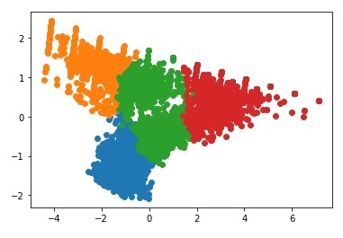

- 파이썬을 기반으로 데이터 분석 기술을 습득해 보자!
- 참고도서: 파이썬 데이터 분석 실무 테크닉 100
- data: https://github.com/jukyellow/pyda100/tree/master/4%EC%9E%A5
- 전체소스: https://github.com/jukyellow/data-scientist/blob/main/01_Base_Skills/(book)Practical-Techniques_100/04_User_Action_Predict_20210423.ipynb
목차
1 | 1. 데이터 로딩/확인 |
데이터 로딩/확인
데이터 로딩
- pandas로 csv파일 read하여 DataFrame으로 반환
1
2
3
4
5
6import pandas as pd
uselog = pd.read_csv('use_log.csv')
print(uselog.isnull().sum())
customer = pd.read_csv('customer_join.csv')
print(customer.isnull().sum())
데이터 확인
- uselog는 사용자의 이용빈도를 체크하기 위한 목적으로 활용
- customer는 회원정보 및 월 사용기간/빈도(min,max 등 추가)관련 정보 존재
1
2
3
4
5
6
7
8
9
10
11
12
13
14
15uselog.head()
log_id customer_id usedate
0 L00000049012330 AS009373 2018-04-01
1 L00000049012331 AS015315 2018-04-01
2 L00000049012332 AS040841 2018-04-01
3 L00000049012333 AS046594 2018-04-01
4 L00000049012334 AS073285 2018-04-01
customer.head()
customer_id name class gender start_date end_date campaign_id is_deleted class_name price campaign_name mean median max min routine_flg calc_date membership_period
0 OA832399 XXXX C01 F 2015-05-01 NaN CA1 0 0_종일 10500 2_일반 4.833333 5.0 8 2 1 2019-04-30 47
1 PL270116 XXXXX C01 M 2015-05-01 NaN CA1 0 0_종일 10500 2_일반 5.083333 5.0 7 3 1 2019-04-30 47
2 OA974876 XXXXX C01 M 2015-05-01 NaN CA1 0 0_종일 10500 2_일반 4.583333 5.0 6 3 1 2019-04-30 47
3 HD024127 XXXXX C01 F 2015-05-01 NaN CA1 0 0_종일 10500 2_일반 4.833333 4.5 7 2 1 2019-04-30 47
4 HD661448 XXXXX C03 F 2015-05-01 NaN CA1 0 2_야간 6000 2_일반 3.916667 4.0 6 1 1 2019-04-30 47
회원 특징별 클러스터링
클러스터링 Feature 추출
- 회원별 사용기간, 사용빈도에 관한 특징 추출
- 최종 월별 사용빈도 예측시, 영향을 끼칠걸로 판단되는 특징을 임으로 선택하여 추출(다른 feature 추가 사용가능)
1
2
3
4
5
6
7
8customer_clustering = customer[["mean", "median","max", "min", "membership_period"]]
customer_clustering.head()
mean median max min membership_period
0 4.833333 5.0 8 2 47
1 5.083333 5.0 7 3 47
2 4.583333 5.0 6 3 47
3 4.833333 4.5 7 2 47
4 3.916667 4.0 6 1 47
K-means 군집화
1 | # 클러스터링으로 회원을 그룹화하자 |
클러스터링 결과 분석
- 회원2 그룹은, 회원기간이 짧지만, 사용횟수가 많은 그룹
- 회원1 그룹은, 기간도 짧고 이용률도 낮음
- 회원0,3은 회원기간이 길다. 그룹3이 회원기간은 길지만, 이용률은 0보다 낮다.
- 이렇게 회원 그룹별로 차이가 발생하는것을 파악하고, 어느그룹인지에 따라 다른 정책적용이 가능하다!!!
1
2
3
4
5
6
7
8
9
10
11
12
13
14
15
16
17클러스터링 결과를 분석하자
customer_clustering.columns = ["월평균값","월중앙값", "월최댓값", "월최솟값","회원기간", "cluster"]
customer_clustering.groupby("cluster").count()
월평균값 월중앙값 월최댓값 월최솟값 회원기간
cluster
0 1334 1334 1334 1334 1334
1 763 763 763 763 763
2 846 846 846 846 846
3 1249 1249 1249 1249 1249
customer_clustering.groupby("cluster").mean()
월평균값 월중앙값 월최댓값 월최솟값 회원기간
cluster
0 5.524239 5.375187 8.745877 2.687406 14.843328
1 3.054713 2.888598 4.756225 1.653997 9.263434
2 8.054608 8.039598 10.009456 6.160757 7.072104
3 4.677494 4.671337 7.232986 2.153723 36.915933 - 클러스터링 결과를 바탕으로 탈퇴회원의 경향을 파악
- 그룹0은, 골고루 분포
- 그룹1은, 탈퇴회원만 존재
- 그룹2는, 초기 가입고객으로 보이며 초반 의욕적인모습
- 그룹3은, 2보다는 낮지만, 안정적인
1
2
3
4
5
6
7
8
9
10customer_clustering = pd.concat([customer_clustering, customer], axis=1)
customer_clustering.groupby(["cluster","is_deleted"],as_index=False).count()[["cluster","is_deleted","customer_id"]]
cluster is_deleted customer_id
0 0 0 785
1 0 1 549
2 1 1 763
3 2 0 827
4 2 1 19
5 3 0 1230
6 3 1 19 - routine_flag: 정기적 비정기적 사용고객 여부
- 그룹0과 그룹3이 가장 정기적으로 사용함
1
2
3
4
5
6
7
8
9
10customer_clustering.groupby(["cluster","routine_flg"],as_index=False).count()[["cluster","routine_flg","customer_id"]]
cluster routine_flg customer_id
0 0 0 228
1 0 1 1106
2 1 0 497
3 1 1 266
4 2 0 52
5 2 1 794
6 3 0 2
7 3 1 1247
클러스터링 가시화
1 | from sklearn.decomposition import PCA |

헬스장 사용빈도 예측
6개월간 DataSet 준비
- 다음달의 이용횟수 예측을 위해 테이터를 준비
1
2
3
4
5
6
7
8
9
10
11
12
13
14# 고객별 사용횟수
uselog["usedate"] = pd.to_datetime(uselog["usedate"])
uselog["연월"] = uselog["usedate"].dt.strftime("%Y%m")
uselog_months = uselog.groupby(["연월","customer_id"],as_index=False).count()
uselog_months.rename(columns={"log_id":"count"}, inplace=True)
del uselog_months["usedate"]
uselog_months.head()
연월 customer_id count
0 201804 AS002855 4
1 201804 AS009013 2
2 201804 AS009373 3
3 201804 AS015315 6
4 201804 AS015739 7 - 현재월 기준, 1개월전~6개월 data(사용빈도)를 차례로 묶어서, 다음달의 예측값으로 활용하자
1
2
3
4
5
6
7
8
9
10
year_months = list(uselog_months["연월"].unique())
print(year_months)
predict_data = pd.DataFrame()
print(predict_data.head())
['201804', '201805', '201806', '201807', '201808', '201809', '201810', '201811', '201812', '201901', '201902', '201903']
Empty DataFrame
Columns: []
Index: []1
2
3
4
5
6
7
8
9
10
11
12
13
14
15
16
17
18
19
20
21
22
23
24
25
26
27
28
29
30
31
32
33
34
35
36
37
38
39
40
41# 직전달 6개월치의 이용횟수를 이번달 기준으로 도출하여 merge
for i in range(6, len(year_months)):
tmp = uselog_months.loc[uselog_months["연월"]==year_months[i]]
tmp.rename(columns={"count":"count_pred"}, inplace=True)
#print(tmp)
#연월 customer_id count_pred
#18532 201810 AS002855 3
#break
for j in range(1, 7):
#print("i-j:", (i-j)) #6-1 => 6-7
#print(year_months[i-j])
tmp_before = uselog_months.loc[uselog_months["연월"]==year_months[i-j]]
del tmp_before["연월"]
# 직전달의 결과를 저장
tmp_before.rename(columns={"count":"count_{}".format(j-1)}, inplace=True)
tmp = pd.merge(tmp, tmp_before, on="customer_id", how="left")
#print(tmp)
#break
#break
predict_data = pd.concat([predict_data, tmp], ignore_index=True)
print(predict_data.head())
print(predict_data.tail())
연월 customer_id count_pred count_0 ... count_2 count_3 count_4 count_5
0 201810 AS002855 3 7.0 ... 5.0 5.0 5.0 4.0
1 201810 AS008805 2 2.0 ... 7.0 8.0 NaN NaN
2 201810 AS009373 5 6.0 ... 7.0 4.0 4.0 3.0
3 201810 AS015233 7 9.0 ... 5.0 7.0 7.0 NaN
4 201810 AS015315 4 7.0 ... 6.0 3.0 3.0 6.0
[5 rows x 9 columns]
연월 customer_id count_pred ... count_3 count_4 count_5
39685 201903 TS995853 8 ... NaN NaN NaN
39686 201903 TS998593 8 ... 9.0 9.0 9.0
39687 201903 TS999079 3 ... 6.0 6.0 4.0
39688 201903 TS999231 6 ... 5.0 5.0 4.0
39689 201903 TS999855 4 ... 4.0 4.0 5.0 - null 제거
1
2
3predict_data = predict_data.dropna()
predict_data = predict_data.reset_index(drop=True)
predict_data.head()
Feature 추가
- 특징이 되는 변수를 추가: 회원유지기간(period)
1
2
3
4
5
6
7
8
9
10
11
12
13
14
15
16
17
18
19
20
21
22
23
24
25predict_data = pd.merge(predict_data, customer[["customer_id","start_date"]], on="customer_id", how="left")
predict_data.head()
연월 customer_id count_pred count_0 count_1 count_2 count_3 count_4 count_5 start_date
0 201810 AS002855 3 7.0 3.0 5.0 5.0 5.0 4.0 2016-11-01
1 201810 AS009373 5 6.0 6.0 7.0 4.0 4.0 3.0 2015-11-01
2 201810 AS015315 4 7.0 3.0 6.0 3.0 3.0 6.0 2015-07-01
3 201810 AS015739 5 6.0 5.0 8.0 6.0 5.0 7.0 2017-06-01
4 201810 AS019860 7 5.0 7.0 4.0 6.0 8.0 6.0 2017-10-01
predict_data["now_date"] = pd.to_datetime(predict_data["연월"], format="%Y%m")
predict_data["start_date"] = pd.to_datetime(predict_data["start_date"])
from dateutil.relativedelta import relativedelta
predict_data["period"] = None
for i in range(len(predict_data)):
delta = relativedelta(predict_data["now_date"][i], predict_data["start_date"][i])
predict_data["period"][i] = delta.years*12 + delta.months
predict_data.head()
연월 customer_id count_pred count_0 count_1 count_2 count_3 count_4 count_5 start_date now_date period
0 201810 AS002855 3 7.0 3.0 5.0 5.0 5.0 4.0 2016-11-01 2018-10-01 23
1 201810 AS009373 5 6.0 6.0 7.0 4.0 4.0 3.0 2015-11-01 2018-10-01 35
2 201810 AS015315 4 7.0 3.0 6.0 3.0 3.0 6.0 2015-07-01 2018-10-01 39
3 201810 AS015739 5 6.0 5.0 8.0 6.0 5.0 7.0 2017-06-01 2018-10-01 16
4 201810 AS019860 7 5.0 7.0 4.0 6.0 8.0 6.0 2017-10-01 2018-10-01 12
Regression 예측
- 다음달 이용횟수를 예측하는 모델을 구축
1
2
3
4
5
6
7
8
9
10
11
12
13predict_data = predict_data.loc[predict_data["start_date"]>=pd.to_datetime("20180401")]
from sklearn import linear_model
import sklearn.model_selection
model = linear_model.LinearRegression()
X = predict_data[["count_0","count_1","count_2","count_3","count_4","count_5","period"]]
y = predict_data["count_pred"]
X_train, X_test, y_train, y_test = sklearn.model_selection.train_test_split(X,y)
model.fit(X_train, y_train)
print(model.score(X_train, y_train))
print(model.score(X_test, y_test))
0.60340021081248
0.6089792828788805 - 모델에 기여하는 변수를 확인 : 가장 직전달의 영향도가 가장 큼
1
2
3
4
5
6
7
8
9
10
11coef = pd.DataFrame({"feature_names":X.columns, "coefficient":model.coef_})
coef
feature_names coefficient
0 count_0 0.333505
1 count_1 0.203808
2 count_2 0.165699
3 count_3 0.172100
4 count_4 0.085076
5 count_5 0.054027
6 period 0.078326 - 임의 사용자의 사용패턴에 대해 다음달의 이용횟수를 예측하자
1
2
3
4
5
6
7x1 =
x2 =
x_pred =
result = model.predict(x_pred)
print(result)
[3.8379106 2.02046272]